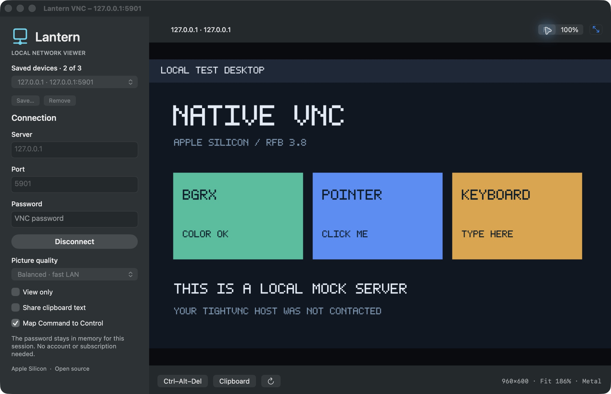

A Mac app, all the way down.
Swift and AppKit up front. A compiled VNC engine underneath. Metal puts the remote desktop on your GPU, with native ARM64 decoding.
No browser window required.A little window into another machine. A native Mac app that makes your TightVNC desktop feel close to home.
Apple Silicon · macOS 13 or later · No login

Keep the server you already have.
Bring a better window to it.
TIGHTVNC + YOUR MACSMALL APP. PROPERLY NATIVE.
Connect directly. Get to work. Lantern brings the essentials together in a focused Mac interface.
Swift and AppKit up front. A compiled VNC engine underneath. Metal puts the remote desktop on your GPU, with native ARM64 decoding.
No browser window required.Use your keyboard, mouse, and trackpad to control the remote machine. Map Command to Control, send function keys, or send Ctrl–Alt–Del.
Start in Auto (Readable), choose Fit or a zoom level, and use Hand or the scroll bars to explore a large desktop.
Optional text clipboard sharing moves text between your Mac and your remote desktop.
Switch to View-only when you want to watch a remote desktop without sending keyboard or pointer input.
A DIRECT CONNECTION
Lantern connects to the VNC server you run. Enter its address and port, add your password, and open a window onto your desktop.
Designed for your trusted local network, or a network you reach through your own VPN or SSH tunnel.
No Lantern cloud relay. No remote account to create.
A SMALL APP. AN OPEN DOOR.
No account. No subscription. No expiry. Just a native window into your other computer.
The native Mac viewer for your own VNC server.
Full access. No payment needed to keep using it.
Download for MacApple Silicon · macOS 13 or later
Native app with Metal rendering
Save up to 3 devices; one active session
Keyboard, pointer, and optional text clipboard
No login, expiry, or payment gate
Complete GPL source included
IF IT MAKES YOUR DAY EASIER
Lantern is free to keep using. If you enjoy it, an optional tip is a simple way to support its development.
Optional support opens soon. No payment is collected here.
Found a rough edge? Have an idea? Help shape a better little Mac app.
THE RIGHT TOOL FOR YOUR SETUP
Lantern is for people who already run a VNC server and want a native Mac window into it.
It provides remote display, keyboard and pointer control, and text clipboard sharing. It does not include a cloud relay, built-in transport encryption, file transfer, remote audio, or remote printing.
For a computer across the internet, use your own VPN or SSH tunnel. Lantern does not set up that connection for you.
GOOD QUESTIONS
An Apple Silicon Mac running macOS 13 or later, and a reachable VNC server such as TightVNC. You’ll need the server’s address, port (usually 5900), and password if authentication is enabled. Lantern is a viewer; it does not install or configure the remote server.
Yes. Lantern uses the RFB/VNC protocol and supports classic VNC password authentication and common encodings, including Tight, ZRLE, and Raw. The remote computer must allow VNC connections from your Mac.
This early-access build does not provide transport encryption. Use it on a trusted local network, or route your connection through your own VPN or SSH tunnel. Do not expose an unencrypted VNC server directly to the internet.
Lantern 1.1.0-preview.1 is in early access. Its new zoom and panning controls have synthetic GPU and UI coverage; physical external-display transitions remain unverified. The current preview is locally signed, with Apple Developer signing and notarization still pending. macOS may require you to explicitly approve opening it. Compatibility and performance depend on your server, network, and display size; no specific benchmark is promised.
Yes. Lantern is free to use and keep using. There is no login, subscription, expiry, or payment gate. Optional support is a thank-you, not a requirement or a way to unlock the app.
This first version can save up to three devices and connect to one active session at a time. Each saved device has its own connection address and port.
You can open an issue on GitHub, or use the feedback form to prepare a text file you can share later. The file downloads locally and is never submitted automatically. The app’s feedback export can also collect basic diagnostic details.
Yes. Lantern is distributed under GPL-2.0-or-later, with the complete corresponding source available alongside the app. You may use, study, modify, and redistribute it under that license. Browse the project on GitHub or download the source archive.
Free to use. No account required.